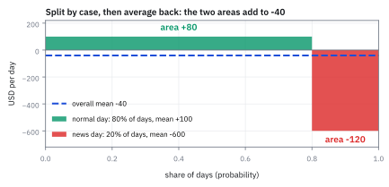
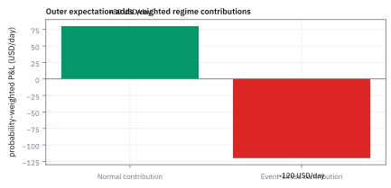
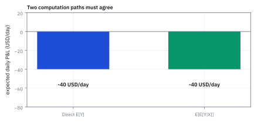
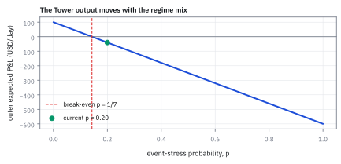

2.1 The Law of Iterated Expectations (Tower Property)
จากการเดาว่าพรุ่งนี้เป็นวันแบบไหน สู่ค่าเฉลี่ยกำไร–ขาดทุนที่มีเหตุผล
รถเมล์มาเร็ว 80% ของวัน ทำให้คุณประหยัด 10 นาที อีก 20% มาช้าจนเสีย 60 นาที คุณจะเฉลี่ย 10 กับ −60 แบบหารสองไหม?
เฉลย: ไม่ วันที่รถมาเร็วมีมากกว่าสี่เท่า ถ้านับ 10 วัน จะได้ 8 วันที่ประหยัด 10 นาที รวม 80 นาที กับ 2 วันที่เสีย 60 นาที รวม 120 นาที เฉลี่ยวันละเสีย 4 นาที ส่วนการหารสองตรง ๆ ได้เสีย 25 นาที ซึ่งทำเหมือนวันช้าเกิดบ่อยเท่าวันเร็ว
Law of Iterated Expectations หรือ Tower Property คือกฎเฉลี่ยผลลัพธ์ภายในแต่ละสถานการณ์ แล้วเฉลี่ยสถานการณ์อีกชั้นตามโอกาส ใช้สรุปผลที่มีเงื่อนไขเป็นตัวเลขเดียวโดยไม่ทิ้งน้ำหนัก
เริ่มจากคำถามที่หัวหน้าถามก่อนตลาดเปิด
พอร์ตหุ้นสหรัฐฯ กองหนึ่งทำเงินได้วันละ \$100 ในวันที่ตลาดปกติ แต่ในวันที่มีข่าวร้ายแรง มันเสียวันละ \$600 ทีมความเสี่ยงประเมินไว้ว่าพรุ่งนี้เป็นวันปกติด้วยโอกาส 80% และเป็นวันข่าวแรง 20%
คำถามมีข้อเดียว คือก่อนรู้ว่าพรุ่งนี้จะเป็นวันแบบไหน พอร์ตนี้คาดว่าจะได้หรือเสียเท่าไร ลองเดาในใจก่อนแล้วจำคำเดาไว้
คำตอบที่คนเดากันบ่อยคือเสีย \$250 ซึ่งมาจากการเอา 100 กับ −600 มาหารสอง คำตอบจริงคือเสีย \$40 ห่างกันหกเท่า เพราะวันปกติเกิดบ่อยกว่าวันข่าวแรงถึงสี่เท่า หัวข้อนี้คือวิธีเฉลี่ยที่ไม่ทำน้ำหนักนั้นหาย
ศัพท์ที่ใช้ในหัวข้อนี้
- expected value
- ค่าเฉลี่ยของผลลัพธ์ทั้งหมดที่ถ่วงด้วยโอกาสของแต่ละผลลัพธ์ ใช้สรุป P&L หรือผลตอบแทนเป็นตัวเลขเดียวก่อนรู้ว่าเกิดอะไรจริง
- payoff
- กระแสเงินสดหรือผลตอบแทนที่สินทรัพย์จ่ายตามผลลัพธ์ที่เกิดขึ้นจริง ใช้ระบุผลลัพธ์ที่จะนำมาหา expected value
- conditional expectation
- conditional expectation คือ expected value หลังมีข้อมูลเจาะจงแล้ว เช่น รู้ว่าพรุ่งนี้เป็นวันปกติหรือวันข่าวแรง ใช้ปรับ forecast เมื่อได้ข้อมูลใหม่
- Law of Iterated Expectations (Tower Property)
- กฎที่บอกว่า expected value ใหญ่รอบเดียว เท่ากับการหา conditional expectation แยกตามกลุ่มย่อย แล้วค่อยนำค่าเฉลี่ยย่อยมาเฉลี่ยซ้ำอีกชั้น
- regime
- สภาวะแวดล้อมของตลาดที่ทำให้ distribution ของผลตอบแทนต่างกัน เช่น normal กับ event-stress ใช้เลือกสมมติฐานความเสี่ยงให้ตรงกับสภาวะจริง
- P&L (profit and loss)
- กำไรหรือขาดทุนของ portfolio ในช่วงเวลาหนึ่ง วัดเป็นหน่วย USD ต่อวัน เพื่อให้คุยขนาดความเสี่ยงด้วยหน่วยเดียวกัน
- information set
- ชุดข้อมูลทั้งหมดที่เรารู้ ณ เวลาที่ต้องตัดสินใจ ใช้เป็นเงื่อนไขในการคำนวณ conditional expectation เพื่อปรับ forecast ให้ตรงสถานการณ์
- partition
- การแบ่งผลลัพธ์ทั้งหมดออกเป็นกลุ่มย่อยที่ครอบคลุมทุกเหตุการณ์และไม่ทับซ้อนกัน ใช้ตรวจว่าโอกาสทุกกลุ่มรวมกันได้ 1 พอดี
- momentum
- กลยุทธ์ซื้อสินทรัพย์ที่ราคาวิ่งขึ้นและขายสินทรัพย์ที่ราคาวิ่งลง ใช้สร้างผลตอบแทนตามแนวโน้มราคา
สัญลักษณ์ที่ใช้ในหัวข้อนี้
| สัญลักษณ์ | ความหมาย | หน่วย |
|---|---|---|
| $Y$ | P&L รายวันของ portfolio ที่ยังไม่รู้ค่าล่วงหน้า | USD/day |
| $X$ | Random Variable ที่บอก regime (สภาวะตลาด) ที่สังเกตได้ | categorical, ไม่มีหน่วย |
| $E[Y]$ | expected value (ค่าเฉลี่ยรวม) ของ $Y$ ก่อนรู้ regime | USD/day |
| $E[Y\mid X]$ | conditional expectation ของ $Y$ เมื่อทราบ regime $X$ แล้ว | USD/day |
| $P(X=x)$ | probability ที่ regime จะเป็นสถานะ $x$ | 0 ถึง 1, ไม่มีหน่วย |
| $x$ | ค่าสถานะใดสถานะหนึ่งของ regime เช่น normal หรือ event-stress | ไม่มีหน่วย |
| $p$ | probability ของ event-stress regime ในกราฟวิเคราะห์ sensitivity | 0 ถึง 1, ไม่มีหน่วย |
ก่อนรู้สถานะ ใช้ค่าเฉลี่ยรวม; หลังรู้สถานะ ใช้ค่าของสถานะนั้น
ก่อนเห็นป้าย $X$ เรารู้เพียงโอกาสของสองสถานะ จึงต้องรวมผลลัพธ์ทั้งสองด้วยน้ำหนักความน่าจะเป็น 0.8 และ 0.2 ให้เหลือ expected P&L รวมเพียงค่าเดียว
เมื่อตลาดเปิดและ model ส่งสัญญาณยืนยันสถานะแล้ว เราจะเปลี่ยนไปใช้ conditional expectation ของสถานะนั้นทันที ค่านี้คือค่าเฉลี่ยที่ปรับตามข้อมูลใหม่ ไม่ใช่ค่าเฉลี่ยรวมเดิม
ในงานจริง trading desk ใช้ค่าเฉลี่ยสองชั้นนี้กำหนดขนาด position ข้ามคืนและตั้ง risk limit หัวใจสำคัญจึงไม่ใช่เวลาบนหน้าปัดนาฬิกา แต่คือข้อมูลที่เรามีอยู่ในมือตอนตัดสินใจ
ขั้นที่ 1 — นับ 100 วันด้วยมือก่อน ยังไม่ต้องมีชื่อกฎ
ลืมสัญลักษณ์ก่อน สมมติ 100 วันเทรด แล้วนับว่าแต่ละแบบเกิดกี่วัน ได้เงินรวมเท่าไร ทำเสร็จแล้วค่อยดูว่ากฎที่มีชื่อพูดอะไร
แต่ละบรรทัดคือการนับ: วันปกติ 80 วัน ได้วันละ 100 รวม 8,000 วันข่าวแรง 20 วัน เสียวันละ 600 รวม 12,000 เอามาลบกันแล้วหารจำนวนวัน ได้ค่าเฉลี่ยต่อวัน −\$40
สังเกตว่าเราไม่ได้เฉลี่ย 100 กับ −600 แบบหารสอง (ซึ่งจะได้ −250) เพราะสองแบบเกิดไม่เท่ากัน การนับวันบังคับให้ถ่วงน้ำหนักเองโดยไม่ต้องคิด
ขั้นที่ 2 — forecast ภายในแต่ละ regime
ถ้าตอบทั้งก้อนเลยจะยาก แต่ถ้าสมมติไปก่อนว่าพรุ่งนี้ตลาดเป็นแบบไหน คำตอบจะง่ายทันที ขั้นนี้จึงตอบทีละสภาวะก่อน
เมื่อรู้ว่า $X$ เป็น normal ค่าเฉลี่ยของ $Y$ คือกำไร \$100 ต่อวัน; เมื่อรู้ว่าเป็น event-stress ค่าเฉลี่ยคือขาดทุน \$600 ต่อวัน เครื่องหมายลบแสดงถึงการขาดทุน และทั้งสองค่ามีหน่วยเป็น USD ต่อวัน
ขั้นที่ 3 — $\mathbb{E}[Y\mid X]$ เป็น random variable ไม่ใช่ตัวเลข
จุดที่คนพลาดคือมอง $\mathbb{E}[Y\mid X]$ เป็นเลขตัวเดียว ถ้ามองแบบนั้น ค่าเฉลี่ยซ้อนสองชั้นในขั้นถัดไปจะอ่านไม่ออกเลย เพราะไม่รู้ว่ากำลังเฉลี่ยอะไรอยู่
ขั้นที่ 2 ให้ตัวเลขมาสองตัว แต่สองตัวนั้นไม่ได้ลอยอยู่เฉย ๆ มันผูกอยู่กับสภาวะที่ยังไม่รู้ว่าจะออกอันไหน ของแบบนั้นมีชื่อเรียกอยู่แล้วตั้งแต่หัวข้อ 1.1 คือ random variable
ตั้งชื่อให้มันว่า $M$ แล้วจะเห็นชัดว่า $M$ รับค่า \$100 ด้วยโอกาส 0.8 และ -\$600 ด้วยโอกาส 0.2 นั่นคือ distribution เต็ม ๆ ของตัวแปร $M$ ไม่ใช่แค่ตัวเลขสองตัวที่จดไว้
พอ $M$ เป็นของสุ่มตัวหนึ่ง การหาค่าเฉลี่ยของมันก็เป็นการหาค่าเฉลี่ยตามปกติ ไม่มีอะไรใหม่ นั่นคือเหตุผลที่เขียนค่าเฉลี่ยซ้อนสองชั้นได้อย่างมีความหมาย ไม่ใช่สัญลักษณ์ที่ตั้งขึ้นลอย ๆ
ขั้นที่ 4 — เฉลี่ย conditional forecast
เมื่อได้คำตอบของแต่ละสภาวะแล้ว ก็ถ่วงด้วยโอกาสที่แต่ละสภาวะจะเกิด แล้วรวมกัน
เอาค่าเฉลี่ยของแต่ละสภาวะมาถ่วงด้วยโอกาสที่สภาวะนั้นจะเกิด
สภาวะสงบได้ \$100 ด้วยน้ำหนัก 0.8 คิดเป็นบวก \$80 ต่อวัน ส่วนสภาวะวิกฤตเสีย \$600 ด้วยน้ำหนัก 0.2 คิดเป็นลบ \$120 ต่อวัน
หักลบกันแล้วเหลือขาดทุนเฉลี่ย \$40 ต่อวัน แปลว่าวันข่าวแรงฉุดกำไรทั้งปีจนติดลบ
ขั้นที่ 5 — Tower Property: พิสูจน์ว่าการตอบทีละสภาวะให้คำตอบเดียวกันเสมอ
สิ่งที่เพิ่งทำในสามขั้นแรกมีชื่อเรียก แต่ชื่อไม่ใช่เหตุผล สูตรข้างล่างคือเหตุผล และมันบอกด้วยว่ากฎนี้ไม่ได้ขอ independence เลย ขอแค่ค่าเฉลี่ยทุกตัวมีค่าจำกัด ลองเทียบสองบรรทัดแรกกับเลข −\$40 ต่อวันในขั้นที่ 4 จะเห็นว่าเป็นสมการเดียวกัน
สิ่งที่ต้องพิสูจน์คือ การตอบทีละสภาวะแล้วถ่วงน้ำหนัก ให้คำตอบเดียวกับการตอบทั้งก้อนเสมอ สองบรรทัดแรกเขียนฝั่งซ้ายด้วยสัญลักษณ์ แล้วแทนคำตอบของแต่ละสภาวะด้วยนิยามของมัน คือค่าเฉลี่ยของ $Y$ ภายในสภาวะนั้น จากนั้นคูณ $P(X=x)$ เข้าไปข้างในได้ เพราะมันไม่ขึ้นกับตัวนับ $y$
บรรทัดที่เจ็ดคือหัวใจ: โอกาสภายในสภาวะ คูณโอกาสของสภาวะ เท่ากับโอกาสที่ทั้งสองอย่างเกิดพร้อมกัน ซึ่งเป็นนิยาม conditional probability ที่ย้ายข้างแล้ว พอสลับลำดับผลรวมและรวมทุกสภาวะจนหมด ก็เหลือโอกาสของ $Y$ ตัวเดียว นั่นคือค่าเฉลี่ยของ $Y$ พอดี สังเกตว่าไม่มีบรรทัดไหนขอ independence เลย
ขั้นที่ 6 — ดึงของที่รู้แล้วออกมาข้างหน้า
กฎนี้คือเครื่องมือที่หายไปถ้าไม่พูดถึงให้ชัด เพราะทุกครั้งที่บทหลัง ๆ ดึงราคาวันนี้ออกมาไว้หน้า conditional expectation มันกำลังใช้บรรทัดนี้อยู่ ไม่ใช่สัญชาตญาณ
กุญแจอยู่ที่คำว่าเมื่อรู้ $X$ แล้ว พอตรึงค่าที่แน่นอน ก้อน $g(x)$ ก็ไม่ใช่ของสุ่มอีกต่อไป มันเป็นเลขคงที่ตัวหนึ่ง และดึงออกนอกผลรวมได้เสมอ ที่เหลือในผลรวมคือค่าเฉลี่ยของ $Y$ ในสภาวะนั้นพอดี
เขียนกลับโดยไม่ตรึงค่า จะได้กฎที่ใช้ได้ทุกสภาวะพร้อมกัน สังเกตว่าฝั่งขวายังมี $X$ อยู่ ผลจึงยังเป็นของสุ่มตามขั้นที่ 3 ไม่ใช่ตัวเลข
กรณีที่ใช้บ่อยที่สุดคือ $g(X)=X$ ซึ่งให้ $\mathbb{E}[X\mid X]=X$ อ่านเป็นภาษาคนว่าของที่รู้ค่าแล้วไม่ต้องเดา ประโยคนี้ถูกใช้ซ้ำตลอดบทที่ 4 ถึง 13 ทุกครั้งที่ดึงของที่รู้แล้วออกมาข้างหน้าค่าเฉลี่ย
Drill — สองกฎนี้ตอบโจทย์แบบนี้ได้ใน 20 วินาที
โจทย์ระดับข้อสอบมักไม่ถามกฎตรง ๆ แต่ถามผลคูณที่ต้องใช้สองกฎต่อกัน ถ้าอ่านออกว่าอะไรรู้แล้วและอะไรยังไม่รู้ ก็ตอบได้ในบรรทัดเดียวโดยไม่ต้องคำนวณ integral อะไรเลย
ข้อแรกใช้ Tower Property อย่างเดียว แทนของที่โจทย์ให้ลงไปแล้วเฉลี่ย ได้ 6 ตรง ๆ
ข้อสองคือข้อที่แยกคนที่เข้าใจออกจากคนที่จำสูตร เข้า Tower ก่อนเหมือนกัน แต่คราวนี้ข้างในมี $X$ ติดอยู่ด้วย ซึ่งรู้ค่าแล้วเมื่อตรึง $X$ จึงดึงออกมาข้างหน้าได้ตามขั้นที่ 6 เหลือค่าเฉลี่ยของกำลังสอง ซึ่งสูตรลัดของหัวข้อ 1.4 ให้เท่ากับ 5
ตรวจเองใน 10 วินาที กด 3*2 ต้องได้ 6 และ 3*(1+2**2) ต้องได้ 15
จุดที่พลาดกันบ่อยคือแยกผลคูณเป็น $\mathbb{E}[X]$ คูณ $\mathbb{E}[Y]$ ได้ 12 ซึ่งผิด เพราะสองตัวนี้ไม่ได้เป็นอิสระต่อกันเลย กฎแยกผลคูณของหัวข้อ 5.5 จึงใช้ไม่ได้ ส่วนต่างระหว่าง 15 กับ 12 คือราคาของการเผลอใช้มัน
แล้วเอาไปใช้ทำอะไรได้จริงบ้าง
การแตกคำถามยากออกเป็นคำถามง่ายตามสถานการณ์ เป็นเทคนิคที่ใช้ซ้ำทั้งเล่ม
ใช้พยากรณ์กำไรขาดทุนเมื่อตลาดมีหลายสภาวะ ตอบทีละสภาวะก่อน แล้วค่อยถ่วงน้ำหนักรวม ซึ่งง่ายกว่าตอบทั้งก้อนมาก
ใช้ตั้งราคาสัญญาที่ผลลัพธ์ขึ้นกับเหตุการณ์กลางทาง เช่นสัญญาที่จ่ายต่างกันตามว่ามีการผิดนัดหรือไม่
ใช้เป็นเครื่องมือพิสูจน์ในบททฤษฎีข้างหน้า ทั้งเรื่องกระบวนการที่คาดการณ์แล้วนิ่ง และการตั้งราคาสัญญา derivative ล้วนใช้กฎข้อนี้เป็นก้าวแรกของการพิสูจน์
ครึ่งที่หายไป: ค่าเฉลี่ยไม่ได้บอกว่าเสี่ยงแค่ไหน
กฎที่พิสูจน์มาทั้งหัวข้อตอบคำถามเดียวคือค่าเฉลี่ยอยู่ตรงไหน แต่คำถามที่ตามมาทันทีในงานจริงคือแล้วมันผันผวนแค่ไหน
และคำตอบนั้นน่าสนใจกว่าที่คิด เพราะความไม่แน่นอนทั้งหมดมาจากสองที่ ไม่ใช่ที่เดียว ที่แรกคือในแต่ละสภาวะตลาดก็ยังมีความไม่แน่นอนของมันเอง ที่สองคือเราไม่รู้ด้วยซ้ำว่าพรุ่งนี้จะอยู่ในสภาวะไหน
การแยกสองก้อนนี้ออกจากกันคือเครื่องมือที่ใช้ตอบว่า ถ้าเราพยากรณ์สภาวะตลาดได้แม่นขึ้น ความเสี่ยงจะลดลงเท่าไร คำตอบคือลดได้เฉพาะก้อนที่สอง ส่วนก้อนแรกไม่ว่าจะรู้ล่วงหน้าดีแค่ไหนก็ไม่หาย
Figure 2.1a — แยกตามสภาวะก่อน แล้วเฉลี่ยกลับ

ความกว้างของแท่งคือสัดส่วนวัน ความสูงคือค่าเฉลี่ยในกรณีนั้น พื้นที่ของวันปกติเป็น +80 ของวันข่าวแรงเป็น −120 รวมกันได้ −40 ซึ่งคือเส้นประ วันข่าวแรงแคบแต่ลึก จึงดึงค่าเฉลี่ยรวมลงจนติดลบ
ทำไมการเฉลี่ยสองชั้นจึงไม่โกงข้อมูล
การคำนวณขั้นแรกตอบว่า หากตลาดอยู่ใน regime ใด regime หนึ่ง ค่าเฉลี่ยของผลตอบแทนจะเป็นเท่าไร
ขั้นที่สองนำผลลัพธ์แต่ละทางมาถ่วงด้วยโอกาสเกิดจริง การบวก 100 กับ -600 แล้วหารสองจะปฏิบัติต่อเหตุการณ์ที่เกิดน้อยเหมือนเหตุการณ์ที่เกิดบ่อย จึงตอบผิดโจทย์
ตัวเลขชัด ๆ: หารสองได้ −\$250 ต่อวัน ซึ่งแย่กว่าคำตอบจริง −\$40 ถึงหกเท่า เพราะทำเหมือนวันข่าวแรงเกิดครึ่งหนึ่งของเวลา ทั้งที่เกิดแค่หนึ่งในห้า
Figure 2.1b — ส่วนร่วมของแต่ละสภาวะหลังถ่วงโอกาสแล้ว

expected P&L คือผลรวมของส่วนร่วมที่ถ่วงโอกาสแล้ว วัน event-stress เกิดไม่บ่อย แต่ขาดทุนต่อครั้งใหญ่จนกินกำไรของวัน normal หมด
Figure 2.1c — เฉลี่ยรวดเดียว เทียบกับเฉลี่ยสองชั้น

ระบบจริงต้องได้ expected P&L เท่ากัน ไม่ว่าจะเฉลี่ยผลลัพธ์ทั้งหมดรวดเดียว หรือเฉลี่ยทีละสภาวะแล้วเฉลี่ยอีกชั้นตาม Tower Property ถ้าสองแท่งไม่เท่ากัน แปลว่ามีโอกาสหล่นหายระหว่างทาง
Figure 2.1d — expected P&L ไวต่อโอกาสเกิดวันข่าวแรงแค่ไหน

ถ้าค่าเฉลี่ยในแต่ละสภาวะคงเดิม โอกาสเกิดวัน event-stress ที่สูงขึ้นจะลาก expected P&L ลงเป็นเส้นตรง จุดที่เส้นตัดศูนย์คือระดับที่ไม่ควรคิดว่ากลยุทธ์ยังมี edge อีกต่อไป
Worked Example — โจทย์จิ๋วที่คำนวณได้
โจทย์ให้อะไรมาบ้าง: วัน calm มีโอกาส 0.8 และกำไรเฉลี่ย \$100 ต่อวัน ส่วนวัน stress มีโอกาส 0.2 และขาดทุนเฉลี่ย \$600 ต่อวัน
คำตอบ: ค่าเฉลี่ยรวมคือ $0.8(100)+0.2(-600)=-40$ หรือขาดทุน \$40 ต่อวัน
ตรวจเองใน 10 วินาที: กด 0.8*100+0.2*(-600) ต้องได้ −40 และโอกาสสองสภาวะต้องรวมกันได้ 1
แปลว่าอะไร: กำไรของวันปกติไม่พอชดเชยวัน stress กับดักคือเฉลี่ย 100 กับ −600 แบบครึ่งต่อครึ่ง ทั้งที่สองสภาวะเกิดไม่เท่ากัน
Worked Example 2.1 — ผลตอบแทนของ momentum strategy ข้าม 3 สภาวะตลาด
โจทย์ให้อะไรมาบ้าง: กลยุทธ์ momentum ให้ผลตอบแทนรายเดือนต่างกันตาม 3 สภาวะตลาด: ผันผวนต่ำมีโอกาส 0.55 ให้กำไรเฉลี่ย +0.9% ต่อเดือน, ผันผวนปกติมีโอกาส 0.32 ให้กำไรเฉลี่ย +0.3% ต่อเดือน, และผันผวนสูง (วิกฤต) มีโอกาส 0.13 ขาดทุนเฉลี่ย -2.1% ต่อเดือน รวมโอกาสทุกสภาวะ 0.55 + 0.32 + 0.13 = 1.00 ครบถ้วนเป็น partition ที่ไม่ทับซ้อนกัน
คำตอบ: (ก) ค่าเฉลี่ยต่อเดือนคือ $0.55(0.9) + 0.32(0.3) + 0.13(-2.1) = +0.318\%$ ต่อเดือน (ข) รายปีแบบคูณ 12 ได้ 3.82% ถ้าทบต้นได้ 1.00318 กำลัง 12 ลบ 1 เท่ากับ 3.88% หรือราว 3.9% ต่อปี (ค) สภาวะสงบกับปกติทำกำไรรวม 0.591% แต่เดือนวิกฤตดึงกำไรลงไป 0.273% คิดเป็น 46.2% ของกำไรทั้งหมด
ตรวจเองใน 10 วินาที: สมมติ 10,000 เดือน จะเป็นเดือนสงบ 5,500 เดือน (กำไร 4,950), ปกติ 3,200 เดือน (กำไร 960), วิกฤต 1,300 เดือน (ขาดทุน 2,730) รวมเป็นบวก 3,180 หาร 10,000 ได้ 0.318% ตรงกันทุกหลัก
แปลว่าอะไร: แม้วิกฤตจะเกิดเพียง 13% ของเวลา แต่ขาดทุนครั้งใหญ่ครั้งเดียวลบกำไรที่สะสมมาเกือบครึ่งพอร์ต กฎหอคอยเตือนว่าอย่าดูแต่เปอร์เซ็นต์ชนะ ให้ดูน้ำหนักคูณขนาดผลลัพธ์เสมอ
ขั้นที่ 7 — กรณี discrete regimes ทั่วไป
เขียนรูปทั่วไปสำหรับกรณีที่มีหลายสภาวะ ไม่ใช่แค่สอง
บรรทัดแรกนับผลลัพธ์ร่วมทุกช่องของตาราง โดยแต่ละช่องให้ค่า $y$ บรรทัดสองใช้กฎคูณความน่าจะเป็น บรรทัดสามดึงน้ำหนัก $P(X=x)$ ออกจากผลรวมเพราะตรึงค่า $x$ อยู่
บรรทัดสี่เรียกผลรวมด้านในว่าค่าเฉลี่ยภายในกลุ่ม จึงได้การเฉลี่ยสองชั้น สำหรับกลุ่มที่โอกาสเป็นศูนย์ไม่ต้องนำมาหาร และสมมติค่าสัมบูรณ์เฉลี่ยมีค่าจำกัดเพื่อให้สลับลำดับผลรวมได้
ขั้นที่ 8 — กรณีค่าต่อเนื่อง: ผลรวมกลายเป็น integral
ในแบบจำลองการเงินอย่าง Black-Scholes (ซึ่งจะสร้างในบทที่ 14) หรือแบบจำลองอัตราดอกเบี้ย ตัวแปรส่วนใหญ่เป็น continuous variables การพิสูจน์ผ่าน integral จึงเป็นรากฐานสำคัญ
เงื่อนไขชี้ขาดคือ $\mathbb{E}[|Y|] \lt \infty$ หาก random variable ไม่มี finite mean เช่น Cauchy distribution การสลับลำดับ integral จะผิดทันที และ Tower Property จะพังทลายลง
เปลี่ยนจากผลรวม discrete มาเป็น integral ของ probability density สองชั้นสำหรับ continuous variables
ชั้นในแทนค่า conditional expectation ด้วย integral ของ $y$ ถ่วงด้วย conditional density
เมื่อกระจาย conditional density ออกเป็น joint density หารด้วย marginal density ตัวหารจะตัดกับ $f_X(x)$ ด้านนอกพอดี
หัวใจคือการสลับลำดับ integral ซึ่งทำได้เมื่อค่าเฉลี่ยของขนาด $|Y|$ มีค่าจำกัด แบบเดียวกับที่สลับลำดับผลรวมในขั้นที่ 5 ถ้าไม่จำกัด เช่น Cauchy ของหัวข้อ 1.11 ลำดับที่ต่างกันให้คำตอบต่างกัน
เมื่อ integrate เทียบกับ $x$ ก่อน พื้นที่ใต้ joint density จะยุบกลับเป็น marginal density $f_Y(y)$ และได้ $\mathbb{E}[Y]$ ตัวเดิมอย่างสมบูรณ์
ขั้นที่ 9 — นิยาม variance ภายในสภาวะ แล้วพลิกข้าง
สูตรลัดนี้สร้างขึ้นจากการกระจายกำลังสองและดึงของที่รู้แล้วออกมาทีละขั้น ไม่ใช่สูตรที่หยิบมาอ้างลอย ๆ
ตรวจสูตรลัดนี้กับตัวเลขของหัวข้อนี้ได้ทันที ในสภาวะ calm ค่าเฉลี่ยคือ 100 และ variance คือ 160,000 ดังนั้นกำลังสองของค่าเฉลี่ยคือ 10,000 บวกกลับเข้าไปได้ $E[Y^2]=170{,}000$ และเมื่อหัก 10,000 ออก ก็ได้ 160,000 เท่าเดิม ซึ่งยืนยันว่าสูตรลัดไม่ได้ให้ค่าที่ต่างออกไป
เริ่มจากนิยามรากฐานของ conditional variance คือ expected value ของกำลังสองของระยะห่างจากค่าเฉลี่ย
กระจายกำลังสองสมบูรณ์ในวงเล็บออกมาเป็นสามพจน์ตามพีชคณิต
ใช้ความเป็นเชิงเส้น โดยดึง conditional expectation ที่รู้ค่าแล้วออกนอกเครื่องหมายเฉลี่ย
รวมพจน์ที่เหมือนกันจะได้สูตรลัดยอดนิยม และเมื่อย้ายข้างจะได้รูปกำลังสองที่พร้อมนำไปใช้ต่อในขั้นถัดไป
ขั้นที่ 10 — ประกอบเป็น Law of Total Variance: ความเสี่ยงแยกเป็นสองก้อน
ใช้นิยามของ variance แล้วใส่กฎที่พิสูจน์ไปแล้วเข้าไปสองครั้ง จะได้การแยกที่อ่านความหมายออกได้ทันที
บรรทัดแรก: สูตรลัดของ variance บรรทัดที่สอง: tower property ใส่ทั้ง $Y^2$ และ $Y$
บรรทัดที่สามคือผลของขั้นก่อน บรรทัดที่สี่แทน $\mathbb{E}[Y^2\mid X]$ ด้วยมัน ก้อน $\mathrm{Var}(Y\mid X)$ แยกออกมา ส่วนสองพจน์ที่เหลือคือ “ค่าเฉลี่ยของกำลังสอง ลบ กำลังสองของค่าเฉลี่ย” ของตัวแปร $\mathbb{E}[Y\mid X]$ ซึ่งคือ variance ของมันตามสูตรลัดเดิม
อ่านความหมาย: ก้อนซ้ายคือความเสี่ยงที่เหลืออยู่ *แม้จะรู้แล้ว* ว่าพรุ่งนี้ตลาดอยู่สภาวะไหน ก้อนขวาคือความเสี่ยงจากการไม่รู้สภาวะ การรู้สภาวะช่วยอธิบายความต่างของค่าเฉลี่ยระหว่างกลุ่ม
แต่ไม่ได้ทำให้ P&L หรือความเสี่ยงของพอร์ตเดิมเปลี่ยนเอง หากหัก conditional mean ออกจาก P&L ความคลาดเคลื่อนที่เหลือมี variance เท่าก้อนซ้าย หัวข้อ 2.2 จะใส่ตัวเลขจริงให้ทั้งสองก้อน
กับดัก: ใช้คำตอบของ “หลังรู้” ตอนที่เรายังไม่รู้
ก่อนเห็น $X$ ถ้าหยิบค่าขาดทุน \$600 ของ event-stress มาใช้ทันที ก็เท่ากับแกล้งทำเป็นว่าวันข่าวแรงเกิดแน่นอน แต่หลัง model บอกแล้วว่าเป็น event-stress การยังใช้ค่าเฉลี่ยรวม -\$40 ก็ผิดกลับด้าน ทุกครั้งให้เขียนก่อนว่า ณ ตอนตัดสินใจเรารู้อะไรแล้ว—ชุดข้อมูลที่รู้นี้เรียกว่า information set—จากนั้นตรวจว่าโอกาสรวมเป็น 1 และหน่วยของคำตอบยังเป็น USD ต่อวัน
ที่มาที่ไป: เมื่อคำถามใหญ่เกินกว่าจะตอบทีเดียว
คำถามจำนวนมากตอบตรง ๆ ไม่ได้ เพราะมีของที่ไม่รู้ซ้อนกันหลายชั้น เช่นกำไรพรุ่งนี้ขึ้นกับว่าพรุ่งนี้ตลาดสงบหรือมีข่าวแรง ซึ่งเราก็ยังไม่รู้ ทางออกคือสมมติไปก่อนว่ารู้ชั้นบนแล้ว ตอบในโลกที่ง่ายลง แล้วค่อยเฉลี่ยทับอีกชั้นตามโอกาสของแต่ละกรณี
ภาพที่คุ้นที่สุดคือรายได้เฉลี่ยของคนทั้งประเทศ: หาค่าเฉลี่ยของแต่ละจังหวัดก่อน แล้วเฉลี่ยข้ามจังหวัดโดยถ่วงด้วยสัดส่วนประชากร ได้คำตอบเดียวกับเอารายได้ทุกคนมาเฉลี่ยรวดเดียว
ปี 1933 Andrey Kolmogorov ทำให้การเฉลี่ยแบบมีเงื่อนไขนี้ใช้ได้แม้กับค่าต่อเนื่อง ซึ่งโอกาสของจุดเดียวเป็นศูนย์ตามหัวข้อ 1.8 และปี 1965 Paul Samuelson ใช้กฎนี้แสดงว่าราคาที่สะท้อนข้อมูลครบแล้ว จะเปลี่ยนแปลงแบบที่ทายล่วงหน้าไม่ได้ กฎนี้จึงถูกใช้ซ้ำแทบทุกบทที่เหลือ ตั้งแต่ตั้งราคา derivative ไปจนถึงวัดความเสี่ยง
ข้อจำกัด: วิธีนี้สมมติอะไร และของจริงเป็นอย่างไร
| เรื่อง | วิธีนี้สมมติว่า | ของจริงเป็นอย่างไร | ผลที่ตามมาเวลาใช้งาน |
|---|---|---|---|
| การแบ่งสภาวะ | แบ่งสภาวะได้ครบและไม่ทับกัน | เส้นแบ่งระหว่างสภาวะตลาดไม่เคยคมชัด | การจัดวันหนึ่งเข้าสภาวะผิดทำให้ตัวเลขเพี้ยนทั้งชุด |
| โอกาสของสภาวะ | รู้โอกาสของแต่ละสภาวะ | ต้องประมาณเอา และมันเปลี่ยนตามเวลา | คำตอบไวต่อค่านี้มาก โดยเฉพาะเมื่อสองสภาวะให้ผลต่างกันมาก |
| ค่าเฉลี่ยในสภาวะ | รู้ค่าเฉลี่ยภายในแต่ละสภาวะ | ข้อมูลของสภาวะที่หายากมีน้อยมาก | สภาวะวิกฤติซึ่งสำคัญที่สุด กลับเป็นสภาวะที่เรารู้น้อยที่สุด |
แถวล่างคือปัญหาที่แก้ไม่ได้ด้วยคณิตศาสตร์ ต้องแก้ด้วยการเตรียมรับมือแทนการพยากรณ์
โค้ดตรวจ Tower Property ด้วย 100 วันและตาราง joint แบบสุ่ม
import numpy as np
days = np.array([100] * 80 + [-600] * 20)
assert days.sum() == -4_000 and days.mean() == -40
p = {"calm": 0.8, "stress": 0.2}
m = {"calm": 100, "stress": -600}
assert abs(sum(p[k] * m[k] for k in p) + 40) < 1e-9 # E[E[Y|X]] = E[Y]
EX, VarX = 2, 1 # drill: E[Y|X] = 3X
assert 3 * EX == 6 and 3 * (VarX + EX ** 2) == 15
rng = np.random.default_rng(1)
joint = rng.random((3, 4)); joint /= joint.sum()
x = np.array([1., 2., 3.]); y = np.array([-2., 0., 1., 5.])
px, py = joint.sum(1), joint.sum(0)
ey_x = (joint @ y) / px
assert abs(px @ ey_x - py @ y) < 1e-12 # tower property
assert abs(px @ (x * ey_x) - x @ joint @ y) < 1e-12 # pull out what is known
var_y = py @ y ** 2 - (py @ y) ** 2
var_y_x = (joint @ y ** 2) / px - ey_x ** 2
assert abs(px @ var_y_x + (px @ ey_x ** 2 - (px @ ey_x) ** 2) - var_y) < 1e-12โค้ดนับ 100 วันได้ −\$40 ต่อวัน ตรวจ drill ว่าค่าเฉลี่ยของ Y คือ 6 และค่าเฉลี่ยของผลคูณคือ 15 แล้วสร้างตาราง joint แบบสุ่มเพื่อยืนยันว่า Tower Property การดึงของที่รู้แล้วออกมา และ Law of Total Variance เป็นจริงกับตารางใด ๆ ไม่ใช่เฉพาะตัวอย่างนี้
สรุปที่ใช้ได้จริง
- Tower Property คือ $E[Y]=E[E[Y\mid X]]$ — หา conditional expectation ก่อน แล้วนำมาเฉลี่ยซ้ำด้วยโอกาสของแต่ละเงื่อนไข
- ห้ามเอาผลของแต่ละสภาวะมาบวกแล้วหารเท่ากันเมื่อโอกาสไม่เท่ากัน: หารสองได้ −\$250 ต่อวัน แต่คำตอบจริงคือ −\$40
- conditional expectation มีหน่วยเดียวกับ outcome (USD/day) ส่วนโอกาสเป็นน้ำหนักไร้หน่วย
- ถ้า regime มีไม่กี่แบบ ให้เอาค่าเฉลี่ยของแต่ละ regime มาถ่วงด้วยโอกาสของ regime นั้นแล้วบวกกัน
- สภาวะเงื่อนไขต้องประกอบกันเป็น partition ที่สมบูรณ์: ครอบคลุมทุกกรณี ไม่ทับซ้อนกัน และผลรวมโอกาสต้องเท่ากับ 1 เสมอ
- $\mathbb{E}[Y\mid X]$ เป็น random variable (เป็น function ของ $X$) ไม่ใช่ตัวเลข และกฎดึงของที่รู้แล้วออกมา $\mathbb{E}[g(X)Y\mid X]=g(X)\mathbb{E}[Y\mid X]$ คือเครื่องมือที่บทที่ 4 ถึง 13 ใช้ตลอด